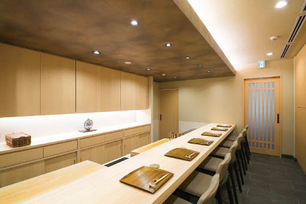
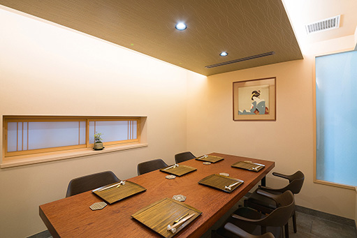

昼 12:00〜15:00
懐石ランチ
- 7,700円 （税込、税抜7,000円）
- 9,900円 （税込、税抜9,000円）
- 13,200円 （税込、税抜12,000円）
※夜の懐石コース、鍋コースも承ります。
Concept
京都御所のすぐ南、閑静な町家通りに佇む『御所南 かまた』は、四季折々の旬を厳選し、素材本来の味わいを引き出す繊細な技法で、懐石という日本料理の本質を丁寧に追求してまいりました。
カウンター8席と完全個室を備えた落ち着いた空間で、料理人の手仕事と季節の移ろいを間近に感じていただきながら、一期一会のお食事をお愉しみいただけます。素材と向き合う静謐な時間、そして語らいのひと時を、同じ一席の中に織り込みます。
旬の魚介、京野菜、山の幸まで。素材ごとに最適な調理法を選び抜き、香り、食感、温度に至るまで計算し尽くした一皿一皿を、贅沢な時間と共にお届けいたします。高級懐石のひとときを、どうぞ当店にて。

Greeting
京都・御所南の町家通りで、日々の懐石料理を営んでおります。
素材の旬と向き合い、火入れや盛り付けの一呼吸を大切に、季節の移ろいを一皿ごとにお届けする——そのために、厨房では朝から静かに、黙々と手を動かしております。
お客様との一席は、いつも一期一会のひととき。食後に「また来たい」と思っていただける料理を、これからも誠実に、丁寧に追い求めてまいります。
京の静謐な一席を、どうぞごゆっくりとお寛ぎくださいませ。

Access
Contact